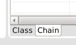
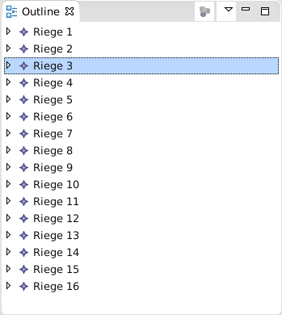
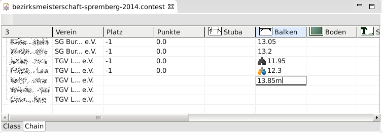
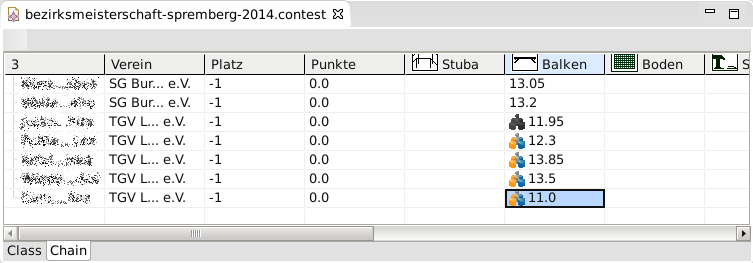
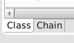
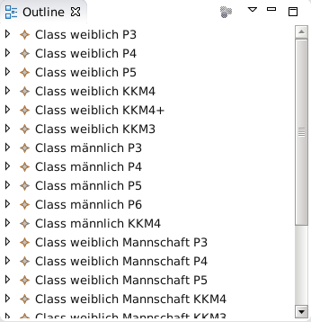

Bevor man beginnt die Wertungen einzugeben, sollte nochmals überprüft werden, dass die Meldungen richtig und vollständig sind, dass in allen Wettkampfklassen die Disziplinen richtig eingegeben wurden, dass die Riegenzuordnung von Stationen bzw. Geräten und Wettkämpfern stimmt. Kurz: die Struktur des Wettkampfes sollte stimmen. Sobald Wertungen eingegeben wurden, wird das Ändern der Struktur schwierig. Werden z.B. Wertungen für eine Wettkämpferin in der Wettkampfklasse "weiblich P5" eingegeben, diese Wettkämpferin aber nachträglich in die Wettkampfklasse "weiblich P4" eingeordnet, dann ist dies nur mit großem Aufwand möglich (sofern es überhaupt von der Wettkampfleitung erlaubt wird.)
Vorraussetzung für die Eingabe der Wertungen ist ein gut vorbereitete Wettkampf-Datei und die geöffnete "Outline"-View. → →
Die Wertungen werden mittels "Wertungs"-Editor eingegeben. Dabei gibt es 2 alternative Eingabemöglichkeiten, die nach belieben auch während der Eingabe gewechselt werden können. Die beiden Möglichkeiten sind:
- Eingabe der Wertungen riegenweise Diese Eingabe empfiehlt sich, wenn die Eingabe entsprechend der Wertungslisten erfolgt.
- Eingabe der Wertungen wettkampfklassenweise Diese Eingabe kann verwendet werden, wenn man sich das Anlegen von Riegen ersparen will oder wenn nachträglich Wertungen berichtigt werden sollen und die Riege nicht mehr bekannt ist.
Procedure 20. Eingabe der Wertungen riegenweise
-
Öffne den "Wertungs"-Editor. Hierfür gibt es mehrere Methoden:
- Drücke im "Übersicht"-Editor auf Wertungen.
- →
-
Wähle die Lasche chain  aus.
-
Wähle im "Outline"-View die Riege, für die die Wertungen eingegeben werden soll.
 -
Gib die Wertung an der entsprechenden Stelle gemäß Wettkämpfer und Gerät bzw. Station ein.
![[Note]](assets/images/note.svg)
Note Dezimale Werte müssen mit '.' anstelle von ',' eingegeben werden. Also z.B. '9.8'.
Soll die Wertung eines Wettkämpfers in der Mannschaftswertung berücksichtigt werden, so ist ein 'm' dem Wert voranzustellen. Bei einer 6:4:3 Regel muss dieses 'm' bei 4 Wettkämpfern eingegeben werden.
 -
Nach der Eingabe ist Enter zu drücken. Handelt es sich um eine Wertung, die zur Mannschaftswertung gehört, wird dies durch ein aktives Icon angezeigt. Handelt es sich um eine Wertung, die nicht zur Mannschaft gezählt werden soll, so wird dies bei Mannschaftkämpfern durch ein inaktives Icon angezeigt. Wertungen bei Einzelkämpfern erhalten kein Icon.
 -
Fahre mit der Eingabe der Wertungen fort, bis alle Wertungen einer Wertungsliste eingegeben sind.
-
Speichere die Datei mittels →
Procedure 21. Eingabe der Wertungen wettkampfklassenweise
Diese Eingabe ist der riegenweisen Eingabe sehr ähnlich. Hier sind einzig die Unterschiede erwähnt.
-
Öffne den "Wertungs"-Editor. (siehe Eingabe der Wertungen riegenweise).
-
Wähle die Lasche class  aus.
-
Wähle im "Outline"-View die Wettkampfklasse, für die die Wertungen eingegeben werden soll.
 -
Gib die Wertungen wie in Eingabe der Wertungen riegenweise) ein.
-
Speichere die Datei mittels →